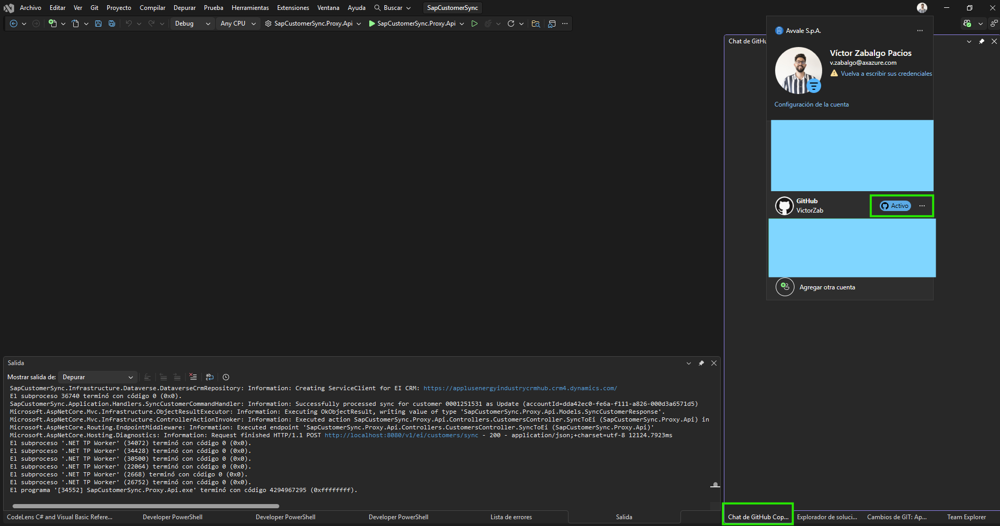
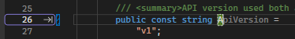
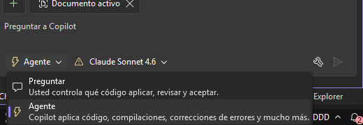
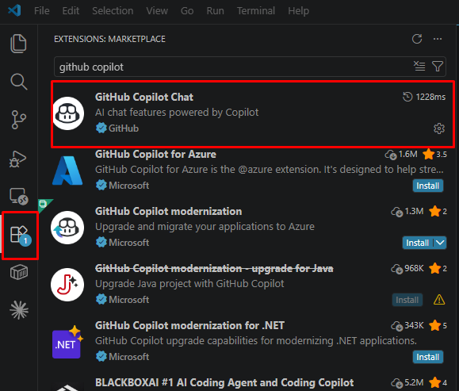
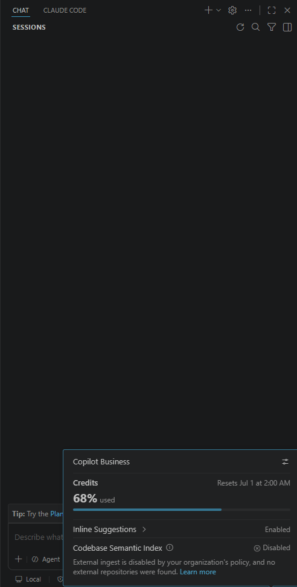

Más productividad
Menos tareas repetitivas y mecánicas. Lo rutinario se resuelve antes y tienes tiempo para lo que aporta valor.
Una guía clara y corporativa para entender por qué implantamos GitHub Copilot en AXAZURE, qué beneficios aporta a tu día a día y cómo usarlo dentro del marco común de la compañía.
Por qué lo implantamos
Implantamos GitHub Copilot para ayudarte a trabajar mejor: menos tareas repetitivas, respuestas más rápidas y acceso al conocimiento del equipo desde tu propio entorno de trabajo.
más productividad en tareas cotidianas según estudios publicados por GitHub. Nuestro objetivo: que cada persona note esa mejora en su trabajo real.
Menos tareas repetitivas y mecánicas. Lo rutinario se resuelve antes y tienes tiempo para lo que aporta valor.
Pregunta al chat sobre un proyecto o repositorio nuevo y reduce drásticamente la curva de entrada.
Resuelve dudas técnicas, busca explicaciones y aprende sin salir de tu herramienta de trabajo habitual.
Todos partimos del mismo marco, las mismas políticas y la misma forma de usar la IA dentro de la empresa.
Marco corporativo
Implantamos Copilot a nivel de empresa para que todos trabajemos bajo el mismo marco, con las mismas reglas y con la garantía de un uso responsable de la IA.
Usamos un catálogo de modelos validado por la organización, alineado con nuestras necesidades reales.
Todo el mundo trabaja con la misma herramienta, las mismas configuraciones y las mismas buenas prácticas.
Las reglas de uso son iguales para cualquier persona, sin depender de configuraciones individuales.
La IA se utiliza dentro de un entorno empresarial gestionado, no como una herramienta personal aislada.
El uso de Copilot se ajusta a los criterios internos de la compañía y a sus estándares de protección de la información.
Misma forma de trabajar para toda la organización, garantizando un uso coherente y profesional de la herramienta.
Cómo se trabaja con Copilot
Copilot ofrece varias formas de interacción, de menos a más autónoma. Saber cuándo usar cada una es la clave para aprovechar la herramienta y trabajar de forma eficiente.
Sugiere código en línea mientras escribes (gris, acepta con Tab). Las "next edit suggestions" predicen el siguiente punto del archivo que editarás.
Siempre activo · El uso por defecto del día a día
Sin coste de créditosConversación: preguntas, explicaciones, fragmentos. No toca archivos. Adjunta contexto con #archivo, arrastrando ficheros o seleccionando código.
Entender código · Dudas · Planificar
Modelos base gratuitosTú defines los archivos, describes el cambio en lenguaje natural y Copilot aplica las modificaciones. Revisas y aceptas o descartas por bloques.
Cambios acotados en archivos conocidos
Modelos base gratuitosDecide qué archivos tocar, edita, ejecuta comandos, corrige errores e itera solo hasta completar la tarea o pedirte más información.
Tareas completas multiarchivo: refactors, features, migraciones
Recomendado: Claude Sonnet
📷Captura pendiente: autocompletado en VS Code
Modo Agente · En profundidad
El modo agente no se detiene tras una respuesta. Itera sobre estos cuatro pasos hasta lograr el objetivo o pedirte más información.
Determina el contexto y los archivos relevantes por sí mismo.
Propone y aplica cambios de código en los archivos necesarios.
Ejecuta comandos con tu aprobación: compilar, instalar paquetes, correr tests.
Revisa errores, se autocorrige y vuelve a iterar hasta terminar.

📷Captura pendiente: selector de modo
Demo paso a paso · El mismo plugin, de cero a producción
"Crea un plugin de Dynamics 365 en C# para la entidad oportunidad que se dispare en Create y Update. Cuando cambie la probabilidad de cierre, recalcula los ingresos ponderados multiplicando el importe estimado por la probabilidad y lo guarda en el campo de ingresos ponderados."
"Amplía el plugin anterior: si la probabilidad supera el 80% pero el importe estimado está vacío, lanza una excepción en español indicando que el importe es obligatorio para oportunidades de alta probabilidad."
"Crea las pruebas unitarias con FakeXrmEasy para el plugin que acabamos de crear. Cubre: probabilidad 0%, 75% con importe, 85% sin importe y update sin cambios. Patrón Arrange / Act / Assert."
"Refactoriza el plugin extrayendo la lógica de cálculo y validación a una clase estática OportunidadHelper. Usa constantes para los nombres de campos. Actualiza los tests para que sigan pasando."
La ejecución en terminal requiere tu confirmación. Nada se ejecuta a tus espaldas.
Cada cambio aparece en "Total changes". Acepta o deshaz bloque a bloque, o todo de golpe.
En Visual Studio puedes restaurar el estado anterior a cualquier prompt si los cambios no te convencen.
Modelos validados por la empresa
Copilot trabaja sobre distintos modelos de IA, todos validados por la organización. Puedes cambiar de motor desde el selector del panel de chat, eligiendo el más adecuado para cada tarea.
Modelos base · Uso general
Uso diario, chat general, tareas habituales. La opción por defecto para la mayoría de situaciones.
Buen equilibrio entre capacidad y agilidad
Una opción sólida cuando la tarea requiere algo más que los modelos base, sin necesidad de ir al máximo nivel.
Razonamiento avanzado
Pensado para tareas realmente complejas. Úsalo cuando el resto de modelos no sean suficientes.
Frontier OpenAI
Para tareas exigentes que requieren un nivel alto de razonamiento o de generación.
Frontier Google
Útil cuando trabajas con mucho contexto o documentación extensa de una sola vez.
Optimizado para velocidad
Iteración rápida cuando la velocidad de respuesta importa más que la máxima capacidad.
Regla práctica
Por defecto: selección automática o modelos base. Cubren la mayoría de tareas habituales.
Si necesitas más: sube a un modelo intermedio como Claude Sonnet para tareas algo más exigentes.
Máxima capacidad solo cuando la tarea lo justifique. No es el modelo por defecto.

📷Captura pendiente: selector de modelos
MCP · Model Context Protocol
Vía MCP, Copilot puede consultar Azure DevOps, Dataverse u otros sistemas directamente desde el editor, sin salir del IDE.
Consulta issues, pull requests, pipelines y boards sin salir del editor.
Accede a entidades, metadatos y configuración directamente en el contexto del agente.
Conecta con agentes IA y workflows de Copilot Studio desde el mismo entorno de desarrollo.
MCP es un protocolo abierto: podemos exponer cualquier API interna o herramienta al agente.
Personalización · Que Copilot trabaje a nuestra manera
copilot-instructions.md
Instrucciones generales del repo: estilo, convenciones, stack, cómo construir y testear. Vive en .github/ del repositorio.
AGENTS.md
Define agentes personalizados con su propio conjunto de herramientas y comportamiento por proyecto.
prompt files
Prompts reutilizables en Markdown, compartibles en el workspace, para tareas recurrentes del equipo.
Casos de uso · Stack AXAZURE
Genera el esqueleto del plugin, validaciones, manejo de Target/PreImage/PostImage y pruebas unitarias con FakeXrmEasy.
Explica flujos complejos, sugiere expresiones, ayuda con convenciones de referencia de entidades.
Andamiaje del control, lógica TypeScript/React, manejo completo del ciclo de vida del componente.
Revisa lógica de integración, detecta condiciones de carrera, genera y ejecuta pruebas, documenta.
Conecta con Azure DevOps y Dataverse vía MCP desde el propio editor para construir agentes IA.
Preguntas abiertas sobre el repo: "¿dónde y cómo se implementa X?" Reduce la curva de entrada a nuevos proyectos.
Genera READMEs y documentación técnica. Revisión asistida en cada PR: detecta bugs y sugiere mejoras.
Uso responsable
Algunas pautas para que el uso de Copilot sea eficiente, alineado con las políticas de la empresa y útil para tu día a día.
Para la mayoría de tareas del día a día, los modelos base son suficientes y están pensados para un uso amplio sin limitaciones prácticas.
Reserva los modelos más potentes para tareas realmente complejas. Para todo lo habitual, los modelos base ofrecen buenos resultados.
El catálogo de modelos disponibles es el mismo para toda la organización y ha sido validado por la compañía.
Revisa siempre los resultados antes de aplicarlos. Tu criterio profesional sigue siendo el que valida lo que llega al cliente o al sistema.
Buenas prácticas
Instalación · 5 minutos

📷Captura pendiente: marketplace VS Code

📷Captura pendiente: Visual Studio cuenta GitHub
Preguntas frecuentes
Las preguntas más comunes de usuarios que empiezan a trabajar con Copilot dentro del entorno corporativo de AXAZURE.
Es un asistente de IA integrado en tus herramientas habituales. Te ayuda a resolver dudas, completar tareas repetitivas, generar borradores y acceder a conocimiento sin cambiar de aplicación. El objetivo es que dediques menos tiempo a lo mecánico y más a lo que aporta valor.
El uso se realiza dentro del marco corporativo definido por la compañía, alineado con nuestras políticas de seguridad, cumplimiento y gobernanza. Solo se utilizan los modelos validados por la empresa y bajo las condiciones acordadas.
No. Copilot se integra en las herramientas que ya usas. La idea es que sume al trabajo que ya haces, no que sustituya tu criterio. Tú sigues siendo quien decide y revisa el resultado final.
Por defecto, los modelos base cubren la mayoría de tareas. Para trabajos más complejos, en la sección Modelos tienes una guía con la recomendación para cada situación. En cualquier caso, todos los modelos disponibles han sido validados por la empresa.
La IA es un apoyo, no un sustituto. Revisa siempre los resultados antes de aplicarlos, igual que revisarías el trabajo de cualquier compañero. El criterio profesional sigue estando en tus manos.
Esta web es tu primer punto de apoyo. Además, en la sección de recursos oficiales tienes enlaces a la documentación y guías oficiales de GitHub Copilot y Microsoft.
Demo
Demo en preparación
El vídeo demostrativo estará disponible próximamente.
Mientras tanto, puedes revisar los casos de uso y las preguntas frecuentes para empezar.
Estamos aquí para ayudarte
Si tienes dudas sobre cómo usar Copilot, qué modelo elegir o cómo aplicarlo a tu día a día, esta web es tu primer punto de apoyo. Empieza por las preguntas frecuentes o consulta los recursos oficiales.